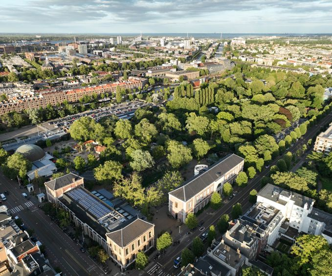
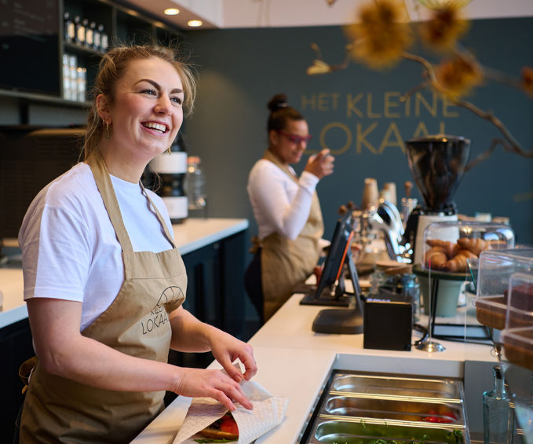

Plan je bezoek
Ticketprijzen & openingstijden
ARTIS-Park is dagelijks geopend van 09.00 tot 18.00 uur. Het Planetarium is inbegrepen bij je ticket voor ARTIS-Park. Let op: ARTIS is pin-only. Het is niet mogelijk om met contant geld te betalen.
| ticket | online | aan de kassa |
|---|---|---|
| 13+ jaar | €29,50 | €30,50 |
| 3 t/m 12 jaar | €25,50 | €26,50 |
| 0 t/m 2 jaar | gratis | gratis |
| studenten | €14,75 | €15,25 |
| VriendenLoterij | - | €24,40 |
| onderwijs | €6,50 | €6,50 |
| zorgtarief | €5,- | €5,- |
Alles wat je moet weten voor een onvergetelijk bezoek aan de dierentuin en de musea.
Route & parkeren
ARTIS ligt in de Plantagebuurt, waar natuur en cultuur elkaar ontmoeten in het hart van Amsterdam. Het park en musea zijn eenvoudig te bereiken met het openbaar vervoer en beschikken over een eigen parkeerterrein. Ontdek alle mogelijkheden en plan je bezoek zorgeloos.
meer over bereikbaarheidHoe druk wordt het tijdens mijn bezoek?
Bekijk in de kalender hoe rustig of levendig het is in de dierentuin op de dag van jouw keuze. Zo kies je een goed moment voor je bezoek - en kun je op populaire dagen met de fiets of OV komen, want dan raakt het parkeerterrein snel vol.
bekijk de kalenderEten & Drinken
Van een snelle snack tot een goed diner, in ARTIS is er voor iedereen wat te vinden. Geniet van gerechten, bereid met duurzame ingrediënten. Voor groepen zijn er speciale arrangementen beschikbaar. Bekijk alle horecalocaties.
ontdek meer